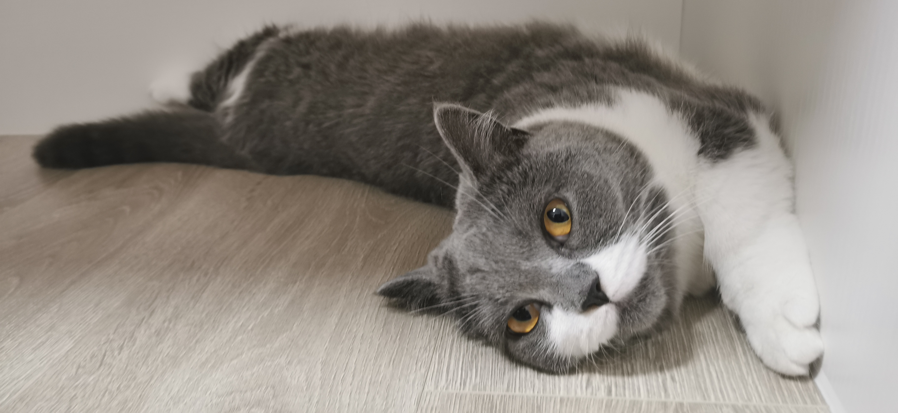

Personal information

My name is Yi Yang and I am 22 years old. My student number is s3798354 and my email address is s3798354@student.rmit.edu.au.
I am from China. I currently study Information Technology in Australia. This is my fourth year of university because the uni in China that I was studying in had a cooperation with RMIT and I should spend two years studying in China as well as two years in RMIT.
I speak Chinese and English. However, I have also undertaken Japanese classes for a couple of months. I had a tutor who tought me Japanese before, but after two months she went to work in another city, I was going to Australia so I couldn’t continue studying. Fortunately, I can still understand some Japanese animation lines without the help of subtitles.
My favourite thing to do in my free time is to have fun with my cat. She is a British shorthair cat and the colour is blue and white.